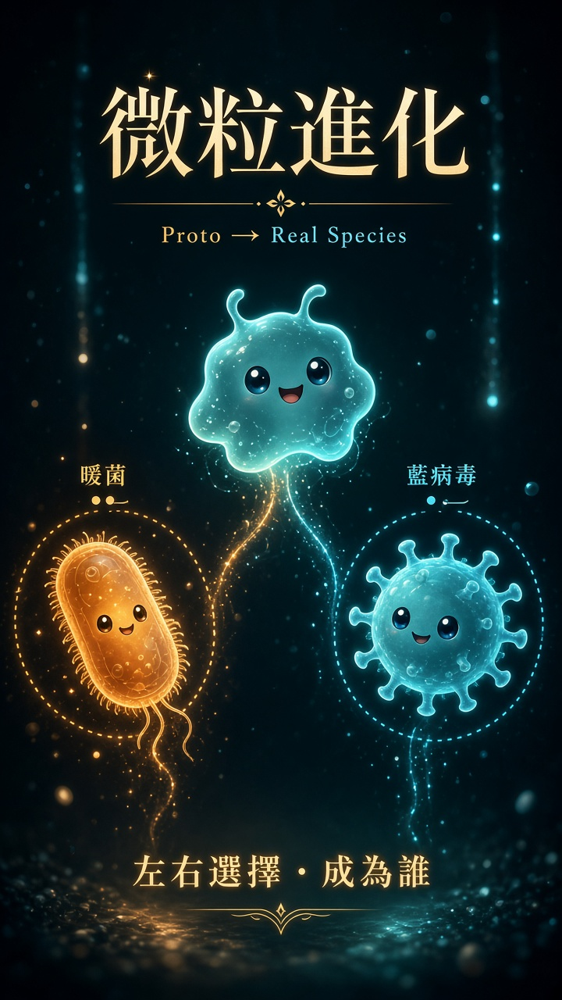

Proto → Real Species
多門選擇・成為誰 ｜ 解鎖圖鑑・路線加深・≥29 終局
原始微粒
Proto-microbe（簡化／假設）
簡化科普／假設：尚未分化成細菌或病毒。
已記入圖鑑
簡化科普／假設・休閒探索；非醫療建議或診斷依據。
簡化科普／假設・休閒探索；非醫療建議或診斷依據。消長為遊戲示意，非真實病程或分數競賽。
已解鎖 0／總數 0 ｜ 未知 0
走到終局即解鎖。特徵／歷史為簡化科普／假設，非醫療建議。